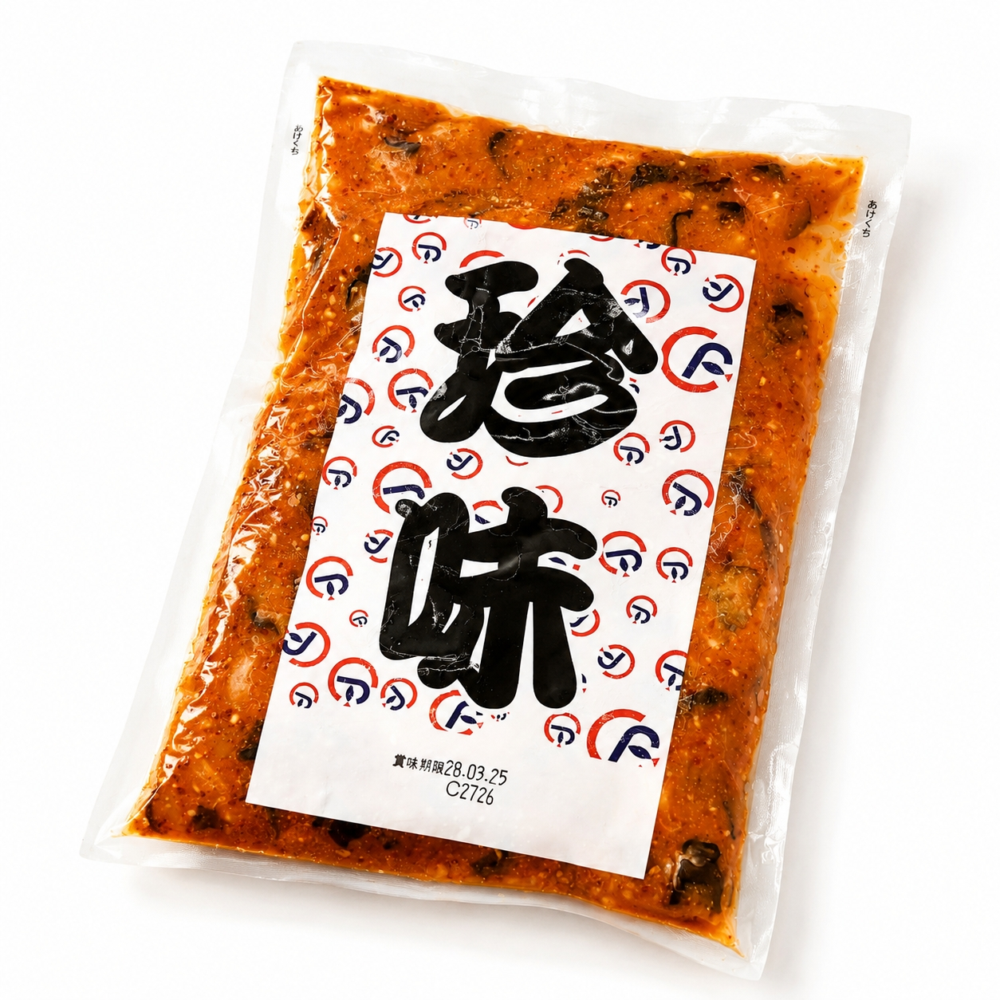

SCENE 01
J021

j 海鮮・魚介類
タコチャンジャ
【プリプリ蛸の旨味、シャキシャキ大根。やみつき食感の旨辛珍味。】
- 内容量500g/p
- 保存冷凍
- 産地日本
商品の特徴を読む
いつもの食卓が、ちょっと特別な居酒屋風に。炊き立ての白いご飯にのせれば、思わずおかわりしたくなる。そんなやみつきになる美味しさの「タコチャンジャ」をお届けします。 主役は、丁寧にボイルされたプリプリの真蛸。噛むほどに旨味が広がります。そこに加わるのは、食感のアクセントとなる国産の割干大根。このシャキシャキ感が、絶妙なコントラストを生み出します。 味の決め手は、にんにくや唐辛子、コチュジャンなどをブレンドした特製の旨辛キムチだれ。ただ辛いだけではない、魚介の旨味と野菜の甘みが溶け込んだ、奥深い味わいです。 500gとたっぷり入っているので、ご飯のお供やお酒の肴はもちろん、冷奴にのせたり、チャーハンの具材にしたりと、アレンジも自由自在。冷凍庫にストックしておけば、いつでも手軽にごちそう逸品が楽しめます。 今日の晩酌に、明日の食卓に。この一口が、日々の食事をさらに豊かに彩ります。ぜひ、ご家庭で本格的な味わいをご賞味ください。
公式サイトへ移動します。価格・在庫・配送条件は移動先で最終確認してください。
SCENE 02
そこに加わるのは、食感のアクセントとなる国産の割干大根。
SCENE 03
冷凍庫にストックしておけば、いつでも手軽にごちそう逸品が楽しめます。
PRODUCT INFORMATION
購入前に確認したい商品情報
- 商品名
- タコチャンジャ
- 商品規格
- 500g/p
- 保存方法
- 冷凍
- 原産国
- 日本
- 製造地
- 日本
- 賞味期限
- 発送日より3ヶ月
原材料
ボイル蛸（国内製造）、割干大根、キムチ味液（異性化液糖、唐辛子、にんにく、食塩、醸造酢、その他）、還元水飴、コチュジャン、醸造調味料、砂糖混合異性化液糖、、味噌、たん白加水分解物、食塩、果糖、でん粉加工品、食用植物油脂、唐辛子、醸造酢、白ごま、香味食用油、魚介エキス、レモン果汁/調味料（アミノ酸等）、pH調整剤、増粘多糖類、カロチノイド色素、香料、（一部に小麦・大豆・りんご・ゼラチン・カニ・豚肉・鶏肉・ごまを含む）
FAQ
購入前のよくあるご質問
解凍方法を教えてください。
風味を損なわないよう、冷蔵庫で一晩ほどかけてゆっくり自然解凍するのが最もおすすめです。お急ぎの場合は、パックのまま流水に当てて解凍することも可能です。
辛さはどのくらいですか？
ピリッとした辛さの中に、魚介や野菜の旨味と甘みが感じられる「旨辛」な味付けです。激辛ではありませんので、多くの方にお楽しみいただけますが、辛さの感じ方には個人差がございます。
MEAT PLUS OFFICIAL SHOP
【プリプリ蛸の旨味、シャキシャキ大根。やみつき食感の旨辛珍味。】
仕入れ・加工・梱包・発送まで自社で行うMEAT PLUSの公式オンラインショップでご注文いただけます。
公式オンラインショップで購入する